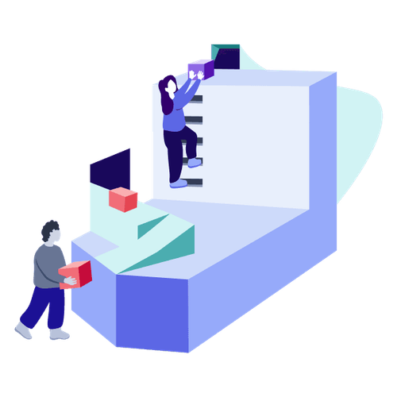

Mit der Academy erhaltet ihr im Business-Plan praxisnahe Lernmodule rund um Facilitation und wirksame Transformation.
Gemeinsam mit 9 Spaces zeigt Plan International Deutschland, wie wertebasiertes Arbeiten Orientierung gibt – nach innen wie nach außen.

Dieses Tool unterstützt dich als Führungskraft, Aufgaben strukturiert an die passende Person im Team zu übergeben.
Mit diesem Tool schafft ihr ein einfaches System, um Fachwissen und Erfahrungswerte zu teilen.
Dieses zweiphasige Tool hilft dabei, ein Projekt wirklich gut aufzusetzen und Klarheit über Ziele, Rollen und Rahmenbedingungen zu schaffen.
Dieser Workshop ist eine Leistungsbeurteilung der angenehmen Sorte: Ihr reflektiert, wie gut ihr mit euren Verantwortlichkeiten aktuell vorankommt und versucht, bestehende Bremsen zu lösen.